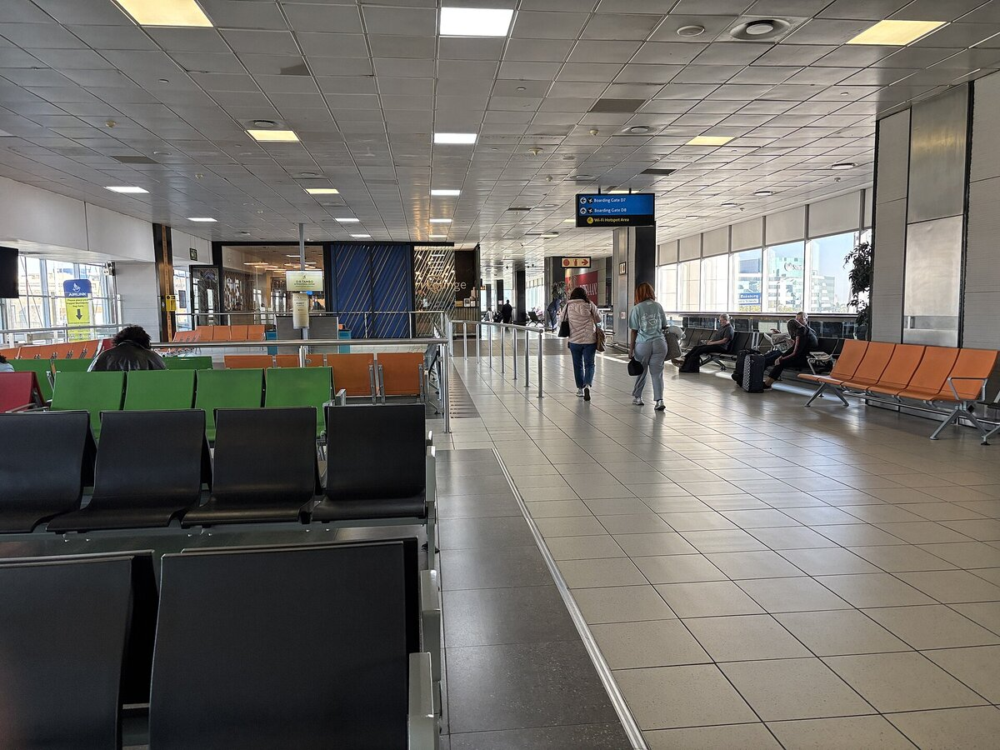

B1 · Travel & Places
Arriving in Johannesburg
Getting from the airport to the hotel, and then getting into the room — the two conversations every arrival needs.
Play the audio and follow along, then read it again on your own. Tap or hover over a highlighted word to see what it means.
Michael and Laura have landed at OR Tambo International Airport after an overnight flight. Michael goes to the information desk.


Michael: Hi — could you help me? We've just arrived and we need to get to our hotel.
Attendant: Of course. Welcome to Johannesburg. Which hotel are you staying at?
Michael: It's in Sandton.
Attendant: Fine, that's straightforward. You've got three options: a metered taxi, an airport shuttle, or a ride-hailing app like Uber or Bolt.
Michael: Could you give me an idea of the cost?
Attendant: A taxi will be somewhere between 600 and 800 rand. An Uber is usually 350 to 500, depending on traffic. The shuttle is charged per person, around 200.
Michael: And are they all running at this hour?
Attendant: Taxis and the apps are available twenty-four hours. The shuttle runs to a fixed timetable, roughly every hour, so you'd need to check the next departure at the counter.
Michael: How long is the drive?
Attendant: Thirty to forty-five minutes normally. Longer in rush hour — and you're arriving right at the start of it.
Michael: Is the shuttle worth waiting for?
Attendant: It depends what you're optimising for. It's the cheapest if you're traveling alone, but it stops at several hotels, so you may be in the vehicle a good deal longer. For two people the price difference against an Uber is small.
Michael: Then we'll take an Uber. Thank you — that was genuinely helpful.
Attendant: You're welcome. The pick-up point is signposted from the exit. Enjoy your stay.

They reach the hotel forty minutes later, check in, and go up to the fourth floor. Michael tries the key card. Nothing happens. He tries it again, more slowly, and the light on the lock stays red.
Laura: Try holding it flat against it.
Michael: I have. Three times. It's not the card being crooked.
Laura: Right. Back down to reception, then.
Michael: Sorry to bother you again. We've just tried our room and the key card isn't working.
Receptionist: I do apologize. Can I confirm the room number?
Michael: Four-oh-five.
Receptionist: Thank you. This happens occasionally — the cards deactivate if they've been near a phone or another card for too long. Let me reprogram it. It'll take a moment.
Laura: No problem at all.
Receptionist: There you are. That should work now. If it doesn't, call down from the corridor phone rather than coming all the way back — there's one by the lifts on each floor.
Michael: That's useful to know. Thank you.
The card works on the first attempt. Laura drops her bag on the nearest bed and observes that they have now been awake for twenty-six hours, and that the shuttle would still have been fine.
Key Vocabulary
- overnight happening or traveling through the night
- straightforward simple; easy to deal with
- metered charged according to a meter that measures distance or time
- shuttle a vehicle running a short route repeatedly on a fixed schedule
- ride-hailing booking a car and driver through a phone app
- per person for each individual, rather than for the group
- timetable a list of the times at which something departs or happens
- departure the act of leaving, or a scheduled leaving time
- rush hour the period when traffic is heaviest, morning and evening
- to optimise for to treat one thing as the priority to be improved
- pick-up point the designated place where a vehicle collects passengers
- signposted marked with signs showing the way
- key card a plastic card used instead of a key to open a hotel room
- crooked not straight
- to reprogram to set an electronic device up again with new instructions
- to observe to remark; to say something you have noticed
Arriving in Johannesburg — B1 · Travel & Places · Renan the Teacher, English Language Academy · https://renangrossi.github.io/englishclasses/reading/b1/arriving-in-johannesburg.html
Interactive Exercises
Practice
Complete each exercise, then click Submit to see your score and an explanation for every answer.
Speaking & Writing
Discussion
There are no right answers here — use these to practice speaking, or write a short answer to each.
- The attendant asks what they are optimising for before recommending anything. Is that better service than simply naming the cheapest option?
- Laura's last line suggests the faster choice was not worth it. How do you decide between saving money and saving time when traveling?
- The receptionist tells them about the corridor phone before they need it. What is the best example of anticipated help you have received?
- Practice the first conversation with a partner, changing the city and the transport options.
- Write about 120 words describing arriving somewhere after a long journey, and the first problem you had to solve.